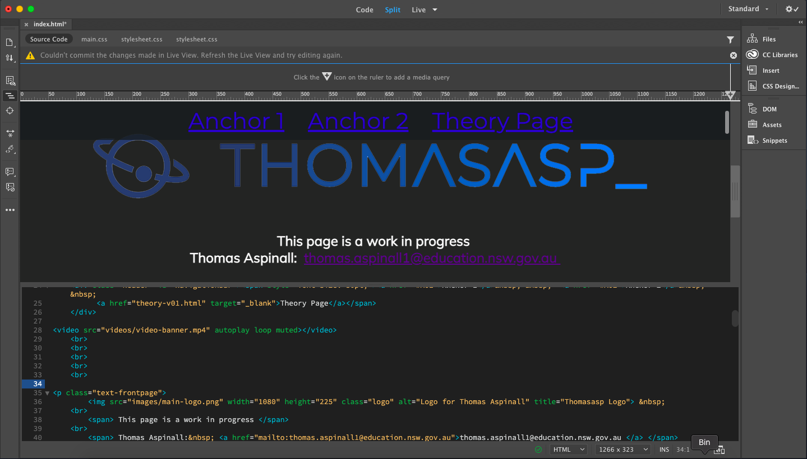
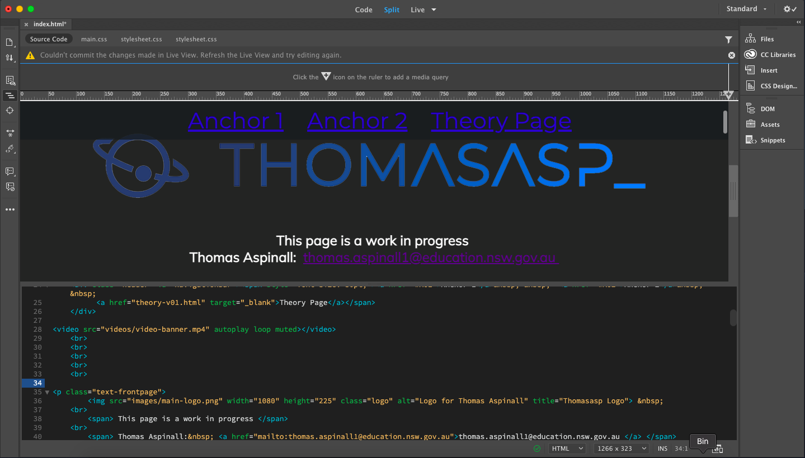
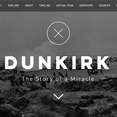
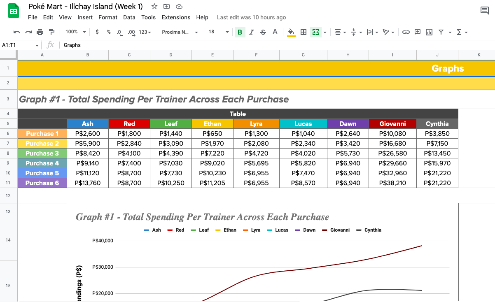
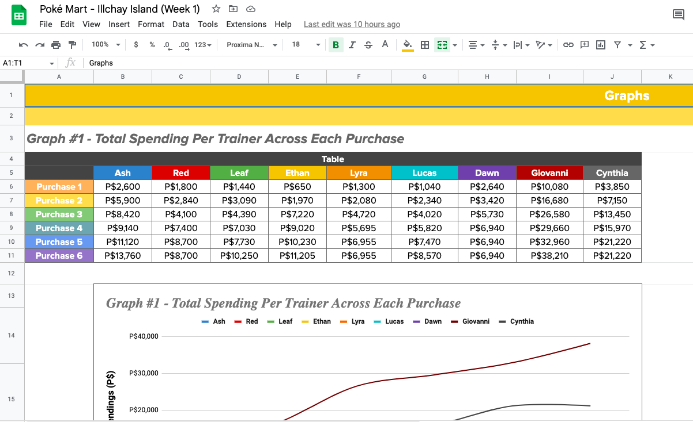

|
|
|
|
|
|
.svg.png) Databases Databases
|
This website was developed using Adobe Dreamweaver and is currently being hosted on GitHub
 

Here are some of my other recent web development projects made using Wix:

|
 |

|

|
Raster (or Bitmap) graphics are a type of digital image that is composed of many tiny rectangular pixels arranged in a grid.
Anti-aliasing is a technique for smoothing rough edges in digital raster images and is commonly used in applications such as digital photography, video games, and computer graphics. It works by averaging the colour of the pixels at a boundary which to the naked eye makes the edge appear more smooth.

Vector graphics are a type of digital image that utilise a sequence of mechanisms or mathematical equations to generate points, lines, polygons, and curves on a 2D plane which then form an image.
Code:
<svg width="400" height="100" >
<rect width="400" height="100" style="fill:rgb(0,0,255);stroke-width:10;stroke:rgb(0,0,0)">
</svg>
Photoshop is an image editing software developed by Adobe that is able to manipulate and edit raster graphics. It is used for a multitude of purposes including photo editing, graphic design and digital art.


Premiere Pro is a video editing software developed by Adobe that is able to cut and manipulate video footge. It is used for a multitude of purposes including clip, video and film editing.
Here I used Premiere Pro to cut, join and manipulate screen recorded footage of a game for a YouTube video. While editing I also used Premiere to mix audio (microphone recording, game sounds, background music), add background music, add custom colour coded subtitles and include some effects.
Here I used Premiere Pro to produce a multimodal video presentation for an English Assessment task. This involved cutting sections from the text's movie adaptation and placing them into the video, adding effects, adding my voice over, editing in stock footage and adding in background music.
After Effects is a special effects and video editing software developed by Adobe that is able to add and manipulate VFX in video clips. It is used for a multitude of purposes including movie VFX and graphic design.
Here I used After Effects to produce an audio visualiser/video for a friend's music track that he produced. This involved creating a custom visualiser design as well as fine tuning the sensitivity to best represent the track. I also designed the layout for the video including the background, track name, artist name and artist icon. I also used After Effect's built in particle plugin to add some rising particles in the background that speed up and slow down depending on the tempo of the track.
Here I used After Effects to produce a custom intro for a fictional game distributing company. This involved designing a custom transparent logo in Photoshop and animating a "wipe" reveal effect using the different elements (controller body, eyes, mouth, wire). I also had to manually keyframe the "bounce" effect seen in the eyes and mouth. I also designed the background in Photoshop using images from multiple games and added a the scroll effect.
Here I used After Effects to design a custom moving wallpaper. This involved adding a moving "fog/dust" effect in the background as well as adding in a small amount of drifting particles.
Audacity is a free, open source digital audio editing and recording software that is used for a multitude of purposes including audio editing, cleaning and audio mixing
The following two clips are an example how audio can edited and mixed in Audacity. The first clip is the unedited raw recording from my microphone. In the second clip I applied a noise reduction in order to minimise the background noise and I also normalised the audio in order to produce a clearer clip


Garage Band is a free MacOS, iPadOS and iOS based audio editing and music producing software. It is used for many purposes including music production, audio mixing and podcast creation
The following tracks were produced using GarageBand for several short films I was involved in and make us of a range of orchestral and electronic instruments as well as sound effects. Automation (Mixing) was also used to change the tone, volume and equilisation of each individual sound track throughout the songs.
Click the play buttons to listen.
Google Sheets is a free online spreadsheet program that is a part of the web-based Google Docs Editors suite.


 



End
{kind=link}